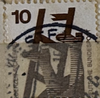
| SOURCE | TITLE| IMAGE MATCH | click to source page |
| eBay UK | 1614] BRD 1988, Carimbo do dia, Goma original, The day of stamps | eBay UK | 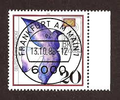 |
| eBay | Germany, Postage Stamp, #2445 (2 Ea) Used, 2007 Karl Valentin (AC) | eBay | 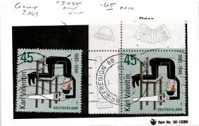 |
| Frimærkebutikken | Industri stemplet Haslev 1968 Denmark 474 Stamp Stamped | 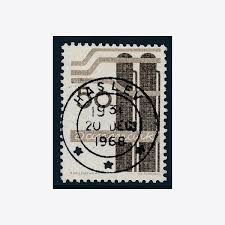 |
| Mystic Stamp | 1079-82 - 1971-73 Germany - Mystic Stamp Company |  |
| Shutterstock | Postage Stamp Belgium: Over 4,843 Royalty-Free Licensable Stock Photos | Shutterstock | 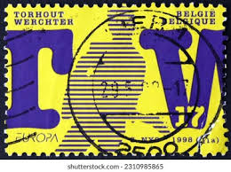 |
| 123RF | POLAND -CIRCA 1964: Stamp Honoring 20th Anniversary Of People's Republic Poland Shows Industrial Simbols, Circa 1964 Stock Photo, Picture and Royalty Free Image. Image 13257821. | 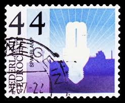 |
| Dreamstime.com | GERMANY - CIRCA 1985 : a Postage Stamp from Germany, Showing a Clock Face with 5 To Twelve. Clock in Front of a Wooded Area Editorial Stock Image - Image of history, circa: 216933754 | 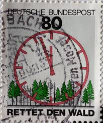 |
| Maison Margiela Graphic Design | 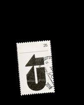 | |
| eBay | Denmark, Postage Stamp, #449-452 Mint NH, 1968 (AB) | eBay | 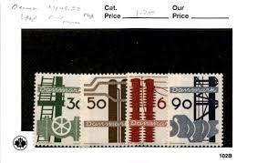 |
| Poppe Stamps | Poppe Stamps: German Federal Republic, 1983, 2012, Anniversary, Philosopher, Death, Anniversary - stamps for sale by theme and country | 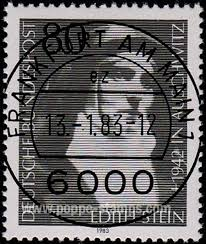 |
| Poppe Stamps | Poppe Stamps: German Federal Republic, 1991, 2405, Anniversary, Hands, Sculptures - stamps for sale by theme and country | 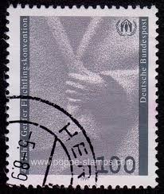 |
| Dreamstime.com | Stamp Austria Agriculture Stock Photos - Free & Royalty-Free Stock Photos from Dreamstime | 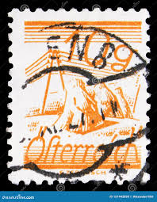 |
| eBay | Three Ds? - USA Merchant trading store stamp m131 | eBay | 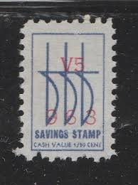 |
| HipStamp | Precancel - South Wales, NY PSS 704 - Better Town and Type Issue | United States, Stamp / HipStamp | 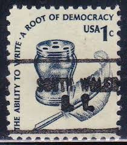 |
| eBay | US PNC Stamp Scott# 2256 Wheel Chair 1988 Used H312 | 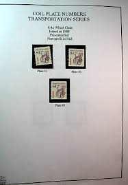 |
| Lennard Makosch | Stamps - Lennard Makosch | 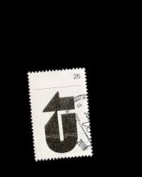 |
| Naval Cover Museum | VAN VOORHIS DE 1028 - NavalCoverMuseum | 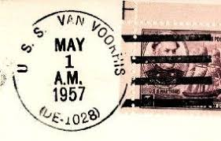 |
| 45cat | Stamps - Klein & Neumann Communications Design - Large Number 2 ; 2 Cent - Germany (2013) | 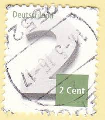 |
| eBay | STAMP US SCOTT 3228 "Bicycle - Small 1998 Year Date" 10 CENT 1998 USED ON PAPER | eBay | 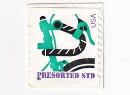 |
| iStock | Postage Stampboots And The Nail Stock Photo - Download Image Now - Black Background, Blue, Boot - iStock | 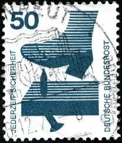 |
| Stamps.org | Stamping Around, January 2021 | 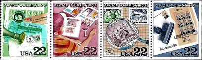 |
| Naval Cover Museum | FANNING FF 1076 - NavalCoverMuseum | 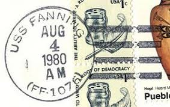 |
| eBay | Germany, Postage Stamp, #1666 Lot Used, 1991 Historic Site (AB) | eBay | 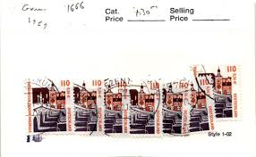 |
| ProBoards | China Treaty Ports | The Stamp Forum (TSF) | 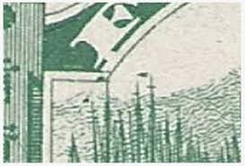 |
| eBay | SC#1610 - $1 Rush Lamp & Candle Used (1610-2) | eBay | 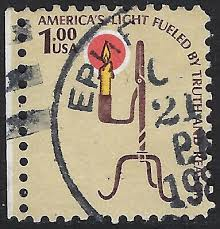 |
| Dreamstime.com | Kurt Schwitters, Birth Centenary Serie, Circa 1987 Editorial Stock Photo - Image of philatelic, poet: 145201323 | 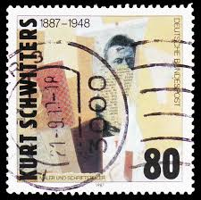 |
| clarencemitchellpapers.org | In Their Own Words: Harry Truman 1944 - 1946 | 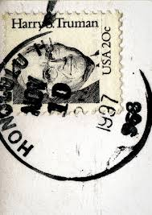 |
| Dreamstime.com | 309 Ii Penny Stock Photos - Free & Royalty-Free Stock Photos from Dreamstime | 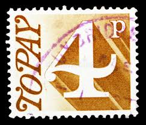 |
| Stamp Auction Network | Corinphila Auctions AG Sale - 298 Page 82 | 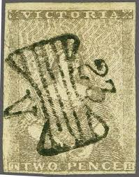 |
| Etsy | San Francisco 20c Cable Car Stamp .. Set of 10 .. Unused Vintage US Postage Stamps | California Wedding | San Francisco | Napa Valley | BART - Etsy | 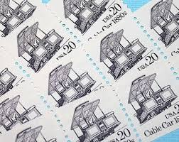 |
| eBay | 1971, Berlin, 409 DZ, ** - 2115603 | eBay | 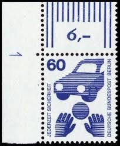 |
| eBay | Scott# 2361 22c CPA with "GIVE THE UNITED WAY" slogan ~ (A-1) | eBay | 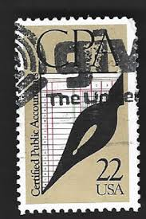 |
| Shutterstock | Brazil Circa 1960 Stamp Printed Brazil Stock Photo 2682180311 | Shutterstock | 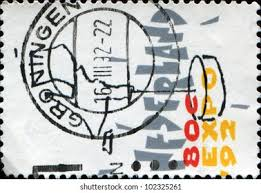 |
| eBay | Germany - DDR, Postage Stamp, #2780 Mint LH, 1989 Machinist (BB) | eBay | 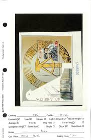 |
| eBay | 1885 **NINTH NATIONAL BANK** NEW YORK ADVERTISING UX7 POSTAL CARD+BOLD POSTMARK! | eBay | 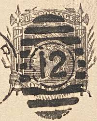 |
| eBay | NEW ZEALAND 1988 GVLI DECIMAL LARGE BAGGAGE TAG (U) *LETTER RATE* | eBay | 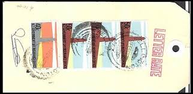 |
| Alamy | Historic postage stamps hi-res stock photography and images - Page 9 - Alamy | 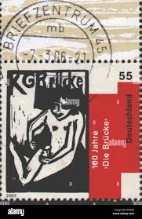 |
| Shutterstock | 29+ Thousand German Marks Royalty-Free Images, Stock Photos & Pictures | Shutterstock | 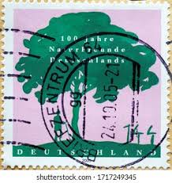 |
| eBay | Germany M81 Special 2 FDC 1991 numbered Gold Frankfurt a M Bavaria 5v SA | eBay | 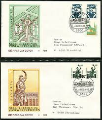 |
| eBay | Bundle 1585, 1607, from the upper edge with first day postmark, Mi. 2.10 | eBay | 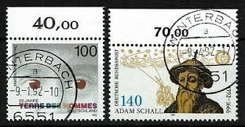 |
| Cherrystone Auctions | U.S. & Worldwide Stamps & Postal History - December 7-8, 2021 - United States Modern Issues | 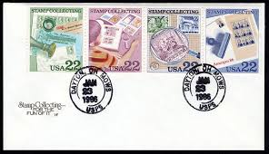 |
| JF-Stamps | Saarland | JF Stamps Danmark | 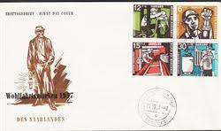 |
| eBay | Germany, Postage Stamp, #2277 (6 Ea) Used, 2004 Bauhaus Sites (AC) | eBay | 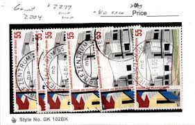 |
| eBay | Bundle MiNr. 2313-2314 First Day Bonn stamped (AH 643) | eBay | 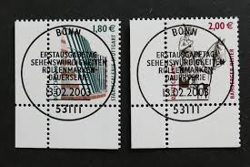 |
| Etsy | Naismith Stamp - Etsy | 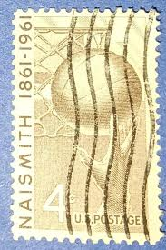 |
| eBay | Germany, Postage Stamp, #2168 (2 Ea) Used, 2003 World Hunger (AE) | eBay | 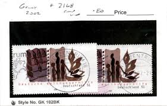 |
| Amazon.com | Amazon.com: Berlin (West) 409DZ with Printing Signs unmounted Mint/Never hinged ** MNH 1971 Accident Prevention (Stamps for Collectors) : Toys & Games | 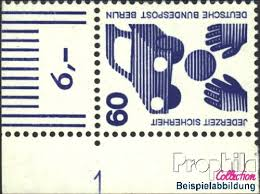 |
| JF-Stamps | 1960 Berlin FERIENPLÄTZE FÜR BERLINER KINDER BERLIN | 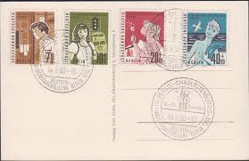 |
| eBay | Mint Hinged Souvenir Sheet Czech & Czechoslovakian Stamps for sale | eBay | 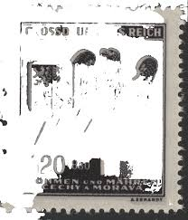 |
| eBay | Germany, Postage Stamp, #1753-1755 (2 Ea) Used, 1992 Leipzig Garden (AG) | eBay | 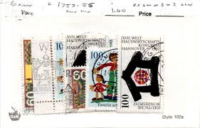 |
| Spotify | Icarus - song and lyrics by Croíthe | Spotify | |
| Shutterstock | 15 Kurt Schwitters Royalty-Free Images, Stock Photos & Pictures | Shutterstock | |
| Free | Metallica 's fake Stamps / Timbres factices - Metal Fan Art - Mailart - Artistamp -Timbre factice - Stamp | |
| eBay | Berlin Michelnummer 416 Viererblock mit Rundstempel Frankfurt | eBay | |
| eBay | Germany Scott #1075b VF MNH 1974 Michel Zusammendrucke MH18b | eBay | |
| eBay | Vintage Lot of 1c & 2c Stamps Locomotive and Ink Well | eBay | |
| rembrandtschool.com | History of Highway Post Office Service | |
| eBay | USA5 #1156 MNH PB4 World Forestry Congress | eBay | |
| eBay | Germany, Postage Stamp, #1933-1936 (2 Ea) Used, 1996 Leibniz (AH) | eBay | |
| Alamy | Stamp collection child hi-res stock photography and images - Page 2 - Alamy |